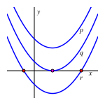
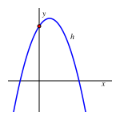
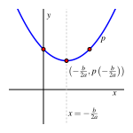
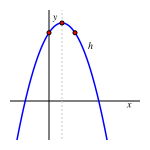
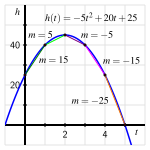
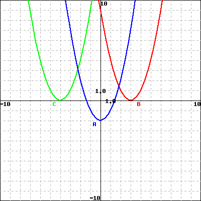
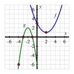

¿Qué patrones podemos observar en cómo cambia una función cuadrática?
¿Cuáles son las propiedades familiares e importantes de las funciones cuadráticas?
¿Cómo se pueden utilizar las funciones cuadráticas para modelar objetos que caen bajo la influencia de la gravedad?
Después de las funciones lineales, las funciones cuadráticas son posiblemente las funciones más simples en matemáticas. Una función cuadrática es aquella que puede escribirse en la forma
donde \(a\text{,}\)\(b\) y \(c\) son números reales con \(a \ne 0\text{.}\) Una de las razones por las que las funciones cuadráticas son especialmente importantes es que modelan la altura de un objeto que cae bajo la fuerza de la gravedad.
Preview Activity1.5.1.
Un globo de agua es lanzado verticalmente desde la ventana de un quinto piso. Su altura, \(h\text{,}\) en metros, en el tiempo \(t\text{,}\) en segundos, está modelada por la función
Explica por qué \(h = q(t)\) no es una función lineal. Usa Definición 1.4.3 en tu respuesta.
¿Cuál es la velocidad promedio del globo de agua en el último segundo antes de que aterrice? ¿Cómo se compara este valor con la velocidad promedio en el intervalo de tiempo \([4.9, 5]\text{?}\)
Subsection1.5.1Propiedades de las Funciones Cuadráticas
Es probable que las funciones cuadráticas te resulten familiares por experiencias en cursos anteriores. A lo largo del texto, dejamos \(y = q(x) = ax^2 + bx + c\) donde \(a\text{,}\)\(b\) y \(c\) son números reales con \(a \ne 0\text{.}\) Desde el principio, es importante notar que cuando escribimos \(q(x) = ax^2 + bx + c\) estamos pensando en una familia infinita de funciones donde cada miembro depende de los tres parámetros \(a\text{,}\)\(b\) y \(c\text{.}\)
. En Desmos, ingresa q(x) = ax^2 + bx + c; se te pedirá que agregues deslizadores para \(a\text{,}\)\(b\text{,}\) y \(c\text{.}\) Hazlo. Luego comienza a explorar con los deslizadores y responde a las siguientes preguntas.
Describe cómo el cambio en el valor de \(a\) afecta la gráfica de \(q\text{.}\)
Describe cómo el cambio en el valor de \(b\) afecta la gráfica de \(q\text{.}\)
Describe cómo el cambio en el valor de \(c\) afecta la gráfica de \(q\text{.}\)
¿Cuál parámetro parece tener el efecto más simple? ¿Cuál parámetro parece tener el efecto más complicado? ¿Por qué?
¿Es posible encontrar una fórmula para una función cuadrática que pase por los puntos \((0,8)\text{,}\)\((1,12)\text{,}\)\((2,12)\text{?}\) Si es así, hazlo; si no, explica por qué no.
Debido a que las funciones cuadráticas nos son familiares, repetiremos rápidamente algunas de sus propiedades importantes conocidas.
Soluciones para \(q(x) = 0\).
Sean \(a\text{,}\)\(b\) y \(c\) números reales con \(a \ne 0\text{.}\) La ecuación \(ax^2 + bx + c = 0\) puede tener \(0\text{,}\)\(1\) o \(2\) soluciones reales. Estas soluciones reales están dadas por la fórmula cuadrática,
\begin{equation*}
x = \frac{-b \pm \sqrt{b^2-4ac}}{2a}\text{,}
\end{equation*}
siempre que \(b^2 - 4ac \ge 0\text{.}\)
Como podemos ver en Figura 1.5.3, al desplazar la gráfica de una función cuadrática verticalmente, podemos hacer que su gráfica cruce el eje \(x\)\(0\) veces (como en la gráfica de \(p\)), exactamente \(1\) vez (\(q\)), o dos veces (\(r\)). Estos puntos son las intersecciones con el eje \(x\) de la gráfica.
Figure1.5.3.Tres ejemplos de funciones cuadráticas que se abren hacia arriba.
Figure1.5.4.Un ejemplo de una función cuadrática que se abre hacia abajo.
Aunque la fórmula cuadrática siempre proporcionará cualquier solución real a \(q(x) = 0\text{,}\) en la práctica a menudo es más fácil intentar factorizar antes de usar la fórmula. Por ejemplo, dado \(q(x) = x^2 - 5x + 6\text{,}\) podemos encontrar sus intersecciones con el eje \(x\) rápidamente mediante factorización. Dado que
se sigue que \((2,0)\) y \((3,0)\) son las intersecciones con el eje \(x\) de \(q\text{.}\) Note en términos más generales que si conocemos las intersecciones con el eje \(x\) de una función cuadrática que son \((r,0)\) y \((s,0)\text{,}\) se sigue que podemos escribir la función cuadrática en la forma \(q(x) = a(x-r)(x-s)\text{.}\)
Toda función cuadrática tiene una intersección con el eje \(y\text{;}\) para una función de la forma \(y = q(x) = ax^2 + bx + c\text{,}\) la intersección con el eje \(y\) es el punto \((0,c)\text{,}\) como se demuestra en Figura 1.5.4.
Además, toda función cuadrática tiene una gráfica simétrica que siempre se curva hacia arriba o siempre se curva hacia abajo. La gráfica se abre hacia arriba si y solo si \(a \gt 0\) y se abre hacia abajo si y solo si \(a \lt 0\text{.}\) A menudo llamamos a la gráfica de una función cuadrática una parábola. Toda parábola es simétrica respecto a una línea vertical que pasa por su punto más bajo o más alto.
El vértice de una parábola.
La función cuadrática \(y = q(x) = ax^2 + bx + c\) tiene su vértice en el punto \(\left( -\frac{b}{2a}, q\left( -\frac{b}{2a} \right) \right)\text{.}\) Cuando \(a \gt 0\text{,}\) el vértice es el punto más bajo en la gráfica de \(q\text{,}\) mientras que si \(a \lt 0\text{,}\) el vértice es el punto más alto. Además, la gráfica de \(q\) es simétrica respecto a la línea vertical \(x = -\frac{b}{2a}\text{.}\)
Figure1.5.5.El vértice de una función cuadrática que se abre hacia arriba.
Figure1.5.6.El vértice de una función cuadrática que se abre hacia abajo.
Nota en particular que, debido a la simetría, el vértice de una función cuadrática se encuentra a medio camino entre sus intersecciones con el eje \(x\) (siempre que la función tenga intersecciones con el eje \(x\)). En ambas Figuras 1.5.5 y 1.5.6, vemos cómo la parábola es simétrica respecto a la línea vertical que pasa por el vértice. Una forma de entender esta simetría puede verse escribiendo una función cuadrática dada en una forma algebraica diferente.
Example1.5.7.
Considera la función cuadrática en forma estándar dada por \(y = q(x) = 0.25x^2 - x + 3.5\text{.}\) Determina las constantes \(a\text{,}\)\(h\) y \(k\) para que \(q(x) = a(x-h)^2 + k\text{,}\) y así determina el vértice de \(q\text{.}\) ¿Cómo explica esta forma alternativa de \(q\) la simetría en su gráfica?
Solution.
Primero observamos que podemos escribir \(q(x) = 0.25x^2 - x + 3.5\) en una forma más cercana a \(q(x) = a(x-h)^2 + k\) factorizando \(0.25\) de los dos primeros términos para obtener
A continuación, queremos agregar una constante dentro del paréntesis para formar un cuadrado perfecto. Observando que \((x-2)^2 = x^2 - 4x + 4\text{,}\) necesitamos agregar \(4\text{.}\) Dado que estamos agregando \(4\) dentro del paréntesis, el \(4\) se está multiplicando por \(0.25\text{,}\) lo que tiene el efecto neto de agregar \(1\) a la función. Para mantener la función tal como está, también debemos restar \(1\text{,}\) y así tenemos
A continuación, observa que el vértice de \(q\) es \((2,2.5)\text{.}\) Esto se cumple porque \((x-2)^2\) es siempre mayor o igual a \(0\text{,}\) y por lo tanto su valor más pequeño posible es \(0\) cuando \(x = 2\text{.}\) Además, cuando \(x = 2\text{,}\)\(q(2) = 2.5\text{.}\) 2
También podemos verificar que este punto es el vértice usando la forma estándar. De \(q(x) = 0.25x^2 - x + 3.5\text{,}\) vemos que \(a = 0.25\) y \(b = -1\text{,}\) por lo que \(x = -\frac{b}{2a} = \frac{1}{0.5} = 2\text{.}\) Además, \(q(2) = 2.5\text{.}\)
Finalmente, la forma \(q(x) = 0.25(x-2)^2 + 2.5\) explica la simetría de \(q\) respecto a la línea \(x = 2\text{.}\) Considera los dos puntos que se encuentran equidistantes de \(x = 2\) en el eje \(x\text{,}\) a una distancia de \(z\) unidades: \(x = 2-z\) y \(x = 2 + z\text{.}\) Observa que para estos valores,
Dado que \(q(2-z) = q(2+z)\) para cualquier elección de \(z\text{,}\) esto muestra que la parábola es simétrica respecto a la línea vertical que pasa por su vértice.
En Example 1.5.7, vimos algunas de las ventajas de escribir una función cuadrática en la forma \(q(x) = a(x-h)^2 + k\text{.}\) Llamamos a esta la forma de vértice de una función cuadrática.
Forma de vértice de una función cuadrática.
Una función cuadrática con vértice \((h,k)\) puede escribirse en la forma \(y = a(x-h)^2 + k\text{.}\) La constante \(a\) puede determinarse a partir de otro valor de la función para una entrada \(x \ne h\text{.}\)
Activity1.5.3.
Razona algebraicamente usando las propiedades apropiadas de las funciones cuadráticas para responder a las siguientes preguntas. Usa Desmos para verificar tus resultados gráficamente.
¿Cuántas funciones cuadráticas tienen intersecciones con el eje \(x\) en \((-5,0)\) y \((10,0)\) y una intersección con el eje \(y\) en \((0,-1)\text{?}\) ¿Puedes determinar una fórmula exacta para dicha función? Si es así, hazlo. Si no, explica por qué.
Supón que una función cuadrática \(q\) tiene vértice en \((-3,-4)\) y se abre hacia arriba. ¿Cuántas intersecciones con el eje \(x\) puedes garantizar que tiene la función? ¿Por qué?
Además de la información en (b), supón que sabes que \(q(-1) = -3\text{.}\) ¿Puedes determinar una fórmula exacta para \(q\text{?}\) Si es así, hazlo. Si no, explica por qué.
¿La función cuadrática \(p(x) = -3(x+1)^2 + 9\) tiene \(0\text{,}\)\(1\) o \(2\) intersecciones con el eje \(x\text{?}\) Razonando algebraicamente, determina los valores exactos de dichas intersecciones o explica por qué no existen.
¿La función cuadrática \(w(x) = -2x^2 + 10x - 20\) tiene \(0\text{,}\)\(1\) o \(2\) intersecciones con el eje \(x\text{?}\) Razonando algebraicamente, determina los valores exactos de dichas intersecciones o explica por qué no existen.
Subsection1.5.2Modelando objetos en caída
Una de las razones por las que las funciones cuadráticas son tan importantes es debido a un hecho físico del universo que habitamos: para un objeto influenciado solo por la gravedad, la aceleración debido a la gravedad es constante. Si medimos el tiempo en segundos y la altura de un objeto que sube o cae en pies, la constante gravitacional es \(g = 32\) pies por segundo por segundo.
Una de las fantásticas consecuencias del cálculo — que, al igual que la realización de que la aceleración debido a la gravedad es constante, se debe en gran parte a Sir Isaac Newton a finales de los años 1600 — es que la altura de un objeto en caída en el tiempo \(t\) se modela mediante una función cuadrática.
Altura de un objeto en caída bajo la fuerza de la gravedad.
Para un objeto lanzado verticalmente desde una altura inicial de \(s_0\) pies con una velocidad de \(v_0\) pies por segundo, la altura del objeto en el tiempo \(t\) (en segundos) está dada por la fórmula
Si la altura se mide en metros y la velocidad en metros por segundo, la constante gravitacional es \(g = 9.8\) y la función \(h\) tiene la forma \(h(t) = -4.9t^2 + v_0t + s_0\text{.}\) (Cuando la altura se mide en pies, la constante gravitacional es \(g = 32\text{.}\))
Activity1.5.4.
Un globo de agua es lanzado verticalmente desde una ventana a una altura inicial de 37 pies y con una velocidad inicial de 41 pies por segundo.
Determina una fórmula, \(s(t)\text{,}\) para la función que modela la altura del globo de agua en el tiempo \(t\text{.}\)
Grafica la función en Desmos en una ventana apropiada.
Usa la gráfica para estimar el tiempo en que el globo de agua aterriza.
Usa álgebra para encontrar el tiempo exacto en que el globo de agua aterriza.
Determina el tiempo exacto en que el globo de agua alcanza su punto más alto y su altura en ese momento.
Calcula la tasa de cambio promedio de \(s\) en los intervalos \([1.5, 2]\text{,}\)\([2, 2.5]\text{,}\)\([2.5,3]\text{.}\) Incluye unidades en tus respuestas y escribe una oración para explicar el significado de los valores que encontraste. Dibuja líneas apropiadas en la gráfica de \(s\) cuyas pendientes respectivas sean los valores de estas tasas de cambio promedio.
Subsection1.5.3Cómo cambian las funciones cuadráticas
Hasta ahora, hemos visto que las funciones cuadráticas tienen muchas propiedades interesantes. En Preview Activity 1.5.1, descubrimos un patrón adicional que es particularmente notable.
Recuerda que consideramos un globo de agua lanzado verticalmente desde la ventana de un quinto piso cuya altura, \(h\text{,}\) en metros, en el tiempo \(t\text{,}\) en segundos, se modela 3
Aquí estamos usando \(a = -5\) en lugar de \(a = -4.9\) por simplicidad.
Luego completamos Table 1.5.8 y Table 1.5.9 para investigar cómo variaban tanto los valores de la función como las tasas de cambio promedio a medida que cambiábamos la entrada a la función.
\(t\)
\(h = q(t)\)
\(0\)
\(q(0) = 25\)
\(1\)
\(q(1) = 40\)
\(2\)
\(q(2) = 45\)
\(3\)
\(q(3) = 40\)
\(4\)
\(q(4) = 25\)
\(5\)
\(q(5) = 0\)
Table1.5.8.Valores de la función para \(h\) en entradas seleccionadas.
\([a,b]\)
\(AV_{[a,b]}\)
\([0,1]\)
\(AV_{[0,1]} = 15\) m/s
\([1,2]\)
\(AV_{[1,2]} = 5\) m/s
\([2,3]\)
\(AV_{[2,3]} = -5\) m/s
\([3,4]\)
\(AV_{[3,4]} = -15\) m/s
\([4,5]\)
\(AV_{[4,5]} = -25\) m/s
Table1.5.9.Tasas de cambio promedio para \(h\) en intervalos seleccionados \([a,b]\text{.}\)
En la Tabla 1.5.9, vemos un patrón interesante en las velocidades promedio de la pelota. De hecho, si eliminamos la notación “\(AV\)” y nos centramos en el valor inicial de cada intervalo, viendo la tasa de cambio promedio resultante, \(r\text{,}\) como una función del valor inicial, podemos considerar la tabla relacionada vista en Table 1.5.10, donde es evidente que \(r\) es una función lineal de \(a\text{.}\)
\(a\)
\(r(a)\)
\(0\)
\(r(0) = 15\) m/s
\(1\)
\(r(1) = 5\) m/s
\(2\)
\(r(2) = -5\) m/s
\(3\)
\(r(3) = -15\) m/s
\(4\)
\(r(4) = -25\) m/s
Table1.5.10.Datos de Table 1.5.9, ligeramente reformulados.
Figure1.5.11.Gráfica de \(h(t) = -5t^2 + 20t + 25\) junto con segmentos de línea cuyas pendientes corresponden a tasas de cambio promedio.
De hecho, al ver estos datos gráficamente como en Figure 1.5.11, observamos que la tasa de cambio promedio de \(h\) está cambiando de una manera que parece estar representada por una función lineal. Aunque se necesitan ideas clave del cálculo para formalizar esta observación, por ahora simplemente notaremos que para una función cuadrática parece haber una función lineal relacionada que nos dice algo sobre cómo cambia la función cuadrática. Además, también podemos decir que en la función cuadrática \(h\) que se abre hacia abajo, su tasa de cambio promedio parece estar disminuyendo a medida que nos movemos de izquierda a derecha 4
Siempre y cuando consideremos la tasa de cambio promedio en intervalos de la misma longitud. Nuevamente, se necesitan ideas del cálculo para hacer esta observación completamente precisa.
.
Una observación clave para concluir aquí es que el hecho de que la parábola “se doble hacia abajo” está aparentemente conectado con el hecho de que su tasa de cambio promedio disminuye a medida que nos movemos de izquierda a derecha. Por el contrario, para una función cuadrática que “se dobla hacia arriba”, podemos mostrar que su tasa de cambio promedio aumenta a medida que nos movemos de izquierda a derecha (ver Exercise 1.5.5.7). Además, también vemos que es posible ver la tasa de cambio promedio de una función en intervalos de \(1\) unidad como una función en sí misma: un proceso que relaciona una entrada (el valor inicial del intervalo) con una salida correspondiente (la tasa de cambio promedio de la función original en el intervalo resultante de \(1\) unidad).
Para cualquier función que se doble consistentemente hacia arriba exclusivamente o hacia abajo exclusivamente en un intervalo dado \((a,b)\text{,}\) usamos el siguiente lenguaje formal 5
Se necesita cálculo para hacer Definition 1.5.12 riguroso y preciso.
para describirla.
Definition1.5.12.
Si una función \(f\) siempre se dobla hacia arriba en un intervalo \((a,b)\text{,}\) decimos que \(f\) es cóncava hacia arriba en \((a,b)\). De manera similar, si \(f\) siempre se dobla hacia abajo en un intervalo \((a,b)\text{,}\) decimos que \(f\) es cóncava hacia abajo en \((a,b)\).
Así, ahora llamamos a una función cuadrática \(q(x) = ax^2 + bx + c\) con \(a \gt 0\) “cóncava hacia arriba”, mientras que si \(a \lt 0\) decimos que \(q\) es “cóncava hacia abajo”.
Subsection1.5.4Resumen
Las funciones cuadráticas (de la forma \(q(x) = ax^2 + bx + c\) con \(a \ne 0\)) no son lineales en absoluto: su tasa de cambio promedio no es constante, sino que depende del intervalo elegido. Al mismo tiempo, las funciones cuadráticas parecen cambiar de una manera muy regimentada: si calculamos la tasa de cambio promedio en varios intervalos consecutivos de \(1\) unidad, parece que la tasa de cambio promedio en sí misma cambia a una tasa constante. Las funciones cuadráticas se doblan hacia arriba (\(a \gt 0\)) o se doblan hacia abajo (\(a \lt 0\)) y estas formas están conectadas a si la tasa de cambio promedio en intervalos consecutivos de \(1\) unidad disminuye o aumenta a medida que nos movemos de izquierda a derecha.
Para un objeto con altura \(h\) medida en pies en el tiempo \(t\) en segundos, si el objeto fue lanzado verticalmente a una velocidad inicial de \(v_0\) pies por segundo y desde una altura inicial de \(s_0\) pies, la altura del objeto está dada por
Es decir, la altura del objeto está completamente determinada por la altura inicial y la velocidad inicial desde la cual fue lanzado. El modelo es válido durante todo el tiempo hasta que el objeto aterriza. Si \(h\) se mide en metros y \(v_0\) en metros por segundo, \(-16\) se reemplaza por \(-4.9\text{.}\)
Una función cuadrática \(q\) puede escribirse en una de tres formas familiares: estándar, de vértice o factorizada 6
No siempre es posible escribir una función cuadrática en forma factorizada involucrando solo números reales; esto solo puede hacerse si tiene \(1\) o \(2\) intersecciones con el eje \(x\text{.}\)
. Table 1.5.13 muestra cómo, dependiendo de la forma algebraica de la función, se pueden leer (fácilmente) varias propiedades de la fórmula. En todos los casos, el signo de \(a\) determina si la función se abre hacia arriba o hacia abajo.
Table1.5.13.Un resumen de la información que se puede leer de las diversas formas algebraicas de una función cuadrática
standard
vertex
factored 7
Provided \(q\) has \(1\) or \(2\)\(x\)-intercepts. In the case of just one, we take \(r = s\text{.}\)
form
\(q(x) = ax^2 + bx + c\)
\(q(x) = a(x-h)^2 + k\)
\(q(x) = a(x-r)(x-s)\)
\(y\)-int
\((0,c)\)
\((0,ah^2 + k)\)
\((0,ars)\)
\(x\)-int 8
Provided \(b^2 - 4ac \ge 0\) for standard form; provided \(-\frac{k}{a} \ge 0\) for vertex form.
Consider the Quadratic function \(f(x)= x^2 - 5 x - 24\text{.}\)
Its vertex is (, ).
Its \(x\)-intercepts are \(x =\) .
Note: If there is more than one answer enter them separated by commas.
Its \(y\)-intercept is \(y =\) .
2.
Attention: you are allowed to submit your answer two times only for this problem!

Identify the graphs A (blue), B (red) and C (green):
is the graph of the function \(f(x)=(x-3)^2\)
is the graph of the function \(g(x)=(x+4)^2\)
is the graph of the function \(h(x)=x^2-2\)
3.
Find the zeros, if any, of the function \(y = 4\!\left(x+8\right)^{2}-8\text{.}\)
Enter your answer as a comma separated list. If no zeros exist, enter NONE.
The zeros are \(x =\)
4.
Find the zero(s) (if any) of the function \(y = x^2 - 15 x + 50\)
Enter your answer as a comma separated list. If no real zeros exist, enter NONE.
The zero(s) is/are \(x =\)
5.
If a ball is thrown straight up into the air with an initial velocity of \(100\) ft/s, its height in feet after \(t\) second is given by \(y = {100}t - 16t^2\text{.}\) Find the average velocity (include units, ) for the time period begining when \(t = 2\) seconds and lasting
(i) \(0.5\) seconds
Average velocity:
(ii) \(0.1\) seconds
Average velocity:
(iii) \(0.01\) seconds
Average velocity:
Finally based on the above results, guess what the instantaneous velocity of the ball is when \(t =2\text{.}\)
Average velocity:
6.
Two quadratic functions, \(f\) and \(g\text{,}\) are determined by their respective graphs in Figure 1.5.14.

Figure1.5.14.Two quadratic functions, \(f\) and \(g\text{.}\)
How does the information provided enable you to find a formula for \(f\text{?}\) Explain, and determine the formula.
How does the information provided enable you to find a formula for \(g\text{?}\) Explain, and determine the formula.
Consider an additional quadratic function \(h\) given by \(h(x) = 2x^2 - 8x + 6\text{.}\) Does the graph of \(h\) intersect the graph of \(f\text{?}\) If yes, determine the exact points of intersection, with justification. If not, explain why.
Does the graph of \(h\) intersect the graph of \(g\text{?}\) If yes, determine the exact points of intersection, with justification. If not, explain why.
7.
Consider the quadratic function \(f\) given by \(f(x) = \frac{1}{2}(x-2)^2 + 1\text{.}\)
Determine the exact location of the vertex of \(f\text{.}\)
Does \(f\) have \(0\text{,}\)\(1\text{,}\) or \(2\)\(x\)-intercepts? Explain, and determine the location(s) of any \(x\)-intercept(s) that exist.
Complete the following tables of function values and average rates of change of \(f\) at the stated inputs and intervals.
\(x\)
\(f(x)\)
\(0\)
\(1\)
\(2\)
\(3\)
\(4\)
\(5\)
Table1.5.15.Function values for \(f\) at select inputs.
\([a,b]\)
\(AV_{[a,b]}\)
\([0,1]\)
\(\)
\([1,2]\)
\([2,3]\)
\([3,4]\)
\([4,5]\)
Table1.5.16.Average rates of change for \(f\) on select intervals.
A water balloon is tossed vertically from a window on the fourth floor of a dormitory from an initial height of \(56.3\) feet. A person two floors above observes the balloon reach its highest point \(1.2\) seconds after being launched.
What is the balloon’s exact height at \(t = 2.4\text{?}\) Why?
What is the exact maximum height the balloon reaches at \(t = 1.2\text{?}\)
What exact time did the balloon land?
At what initial velocity was the balloon launched?